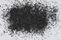

|
DOCUMENTATION_FORMAT: MINERAL
SAMPLE_ID: HS195.1B, HS195.2B, HS195.3B, HS195.4B
MINERAL_TYPE: Oxide
MINERAL: Magnetite (Spinel group)
FORMULA: Fe+2(Fe+3)2O4
FORMULA_HTML: Fe+2Fe+32O4
COLLECTION_LOCALITY: Ishpeming, Michigan
ORIGINAL_DONOR: Hunt and Salisbury Collection
CURRENT_SAMPLE_LOCATION: USGS Denver Spectroscopy Laboratory
ULTIMATE_SAMPLE_LOCATION: USGS Denver Spectroscopy Laboratory
SAMPLE_DESCRIPTION:
Forms a series with Magnesioferrite and with Jacobsite.
The spectrum of this sample was originally published in:
Hunt, G.R., J.W. Salisbury, and C.J. Lenhoff, 1971, Visible and near-infrared spectra of minerals and rocks: III. Oxides and hydroxides. Modern Geology, v. 2, p. 195-205.
With the note: "This sample is slightly contaminated with (spectrally neutral) quartz. Like the previous sample [HS78], it displays typically opaque behavior, decreasing in reflectivity with decreasing particle size. It is unusual in that it also exhibits a very weak band near 1.0µm due to the ferrous ion. The explanation for its opacity is as given above for [Magnetite HS78]."
Grain size fractions are indicated by the extension after the sample number:
.1B = <5 µm
.2B = <74 µm
.3B = 74-250 µm
.4B = 250-1200 µm
IMAGE_OF_SAMPLE:

END_SAMPLE_DESCRIPTION.
XRD_ANALYSIS:
40 kV - 30 mA, 7.3-9.5 keV
File: magnti195.out, -.mdi, ground once; mgt195-2.*, ground twice
References: JCPDS 19-629; Huebner's reference patterns; SEM X-ray spectroscopy.
Found: Magnetite, traces of an alkali feldspar (albite?), chlorite, and an
unidentified phase with reflections at 3.31, 3.13, and 3.05 Angstroms.
Comments: Magnetite is well crystallized and peak positions are consistent with
Fe3O4 composition. SEM suggests grains containing Ca-Mn-Mg-Fe (carbonate?).
END_XRD_ANALYSIS.
COMPOSITIONAL_ANALYSIS_TYPE: None # XRF, EPMA, ICP(Trace), WChem
COMPOSITION_TRACE:
COMPOSITION_DISCUSSION:
None.
END_COMPOSITION_DISCUSSION.
MICROSCOPIC_EXAMINATION:
END_MICROSCOPIC_EXAMINATION.
SPECTROSCOPIC_DISCUSSION:
There are spectral artifacts between 0.58 and 0.64 microns in the spectrum of HS195.4B due to glint off the sample affecting an order sorting filter transition in the spectrometer used for measurement. G. Swayze.
END_SPECTROSCOPIC_DISCUSSION.
SPECTRAL_PURITY: 1b2_3_4_ # HS195.1B # 1= 0.2-3, 2= 1.5-6, 3= 6-25, 4= 20-150 microns
SPECTRAL_PURITY: 1b2_3_4_ # HS195.2B # 1= 0.2-3, 2= 1.5-6, 3= 6-25, 4= 20-150 microns
SPECTRAL_PURITY: 1b2b3b4u # HS195.3B # 1= 0.2-3, 2= 1.5-6, 3= 6-25, 4= 20-150 microns
SPECTRAL_PURITY: 1b2_3_4_ # HS195.4B # 1= 0.2-3, 2= 1.5-6, 3= 6-25, 4= 20-150 microns
{kind=link}